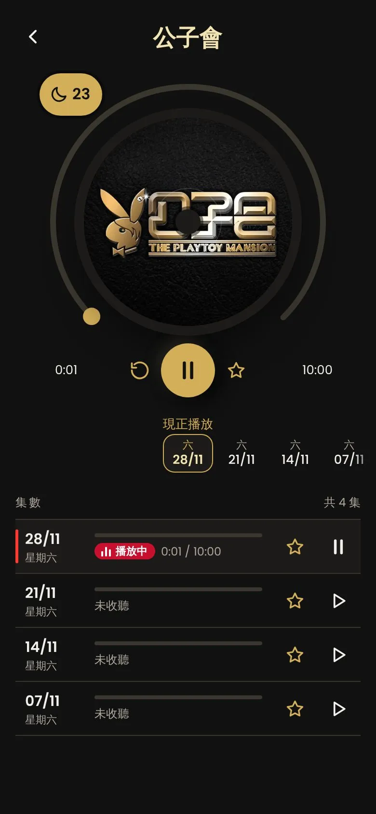
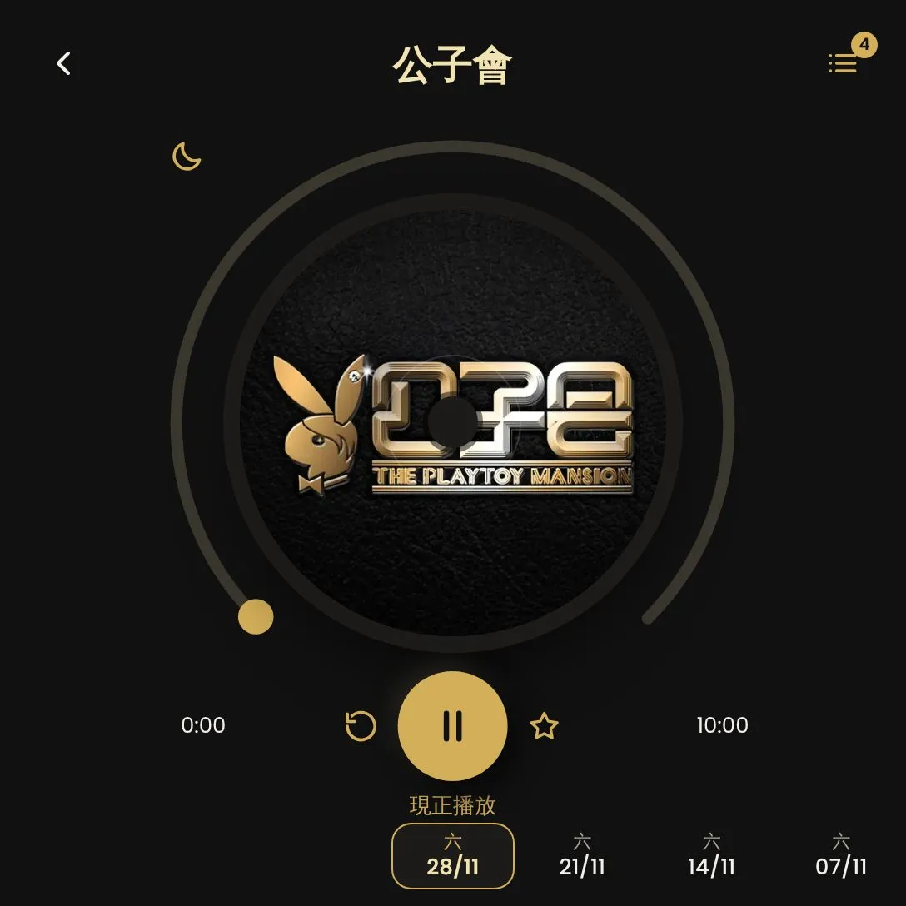
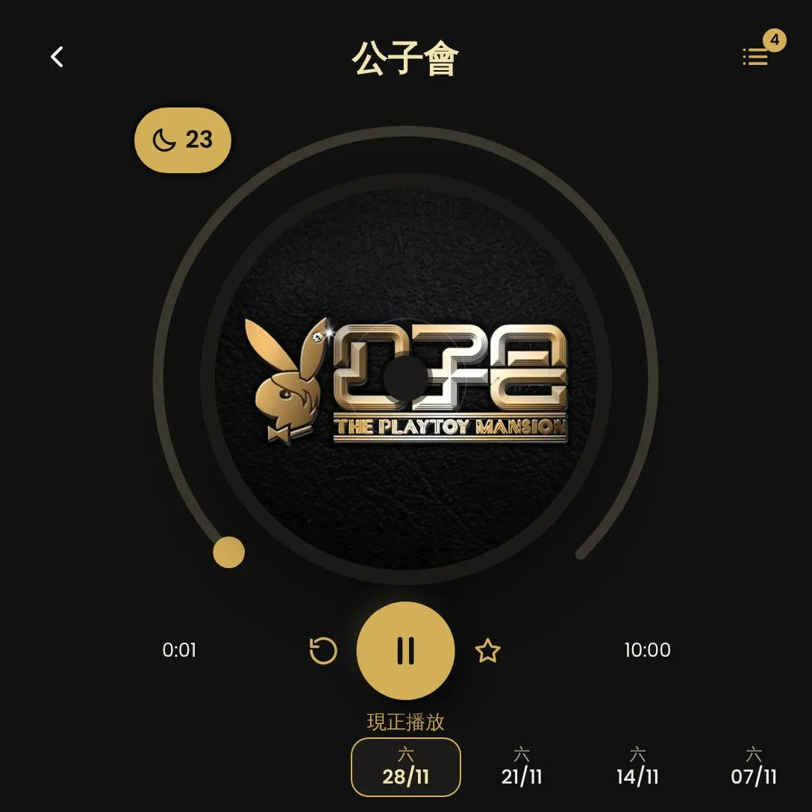
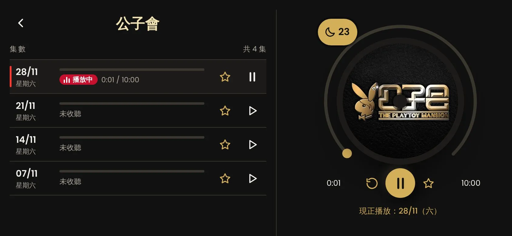
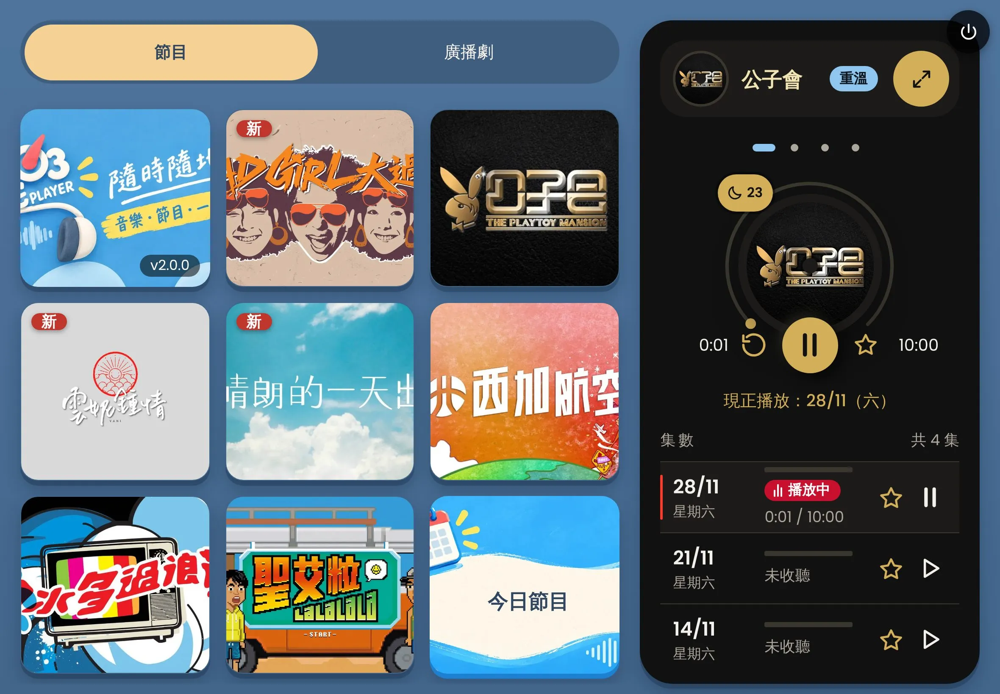
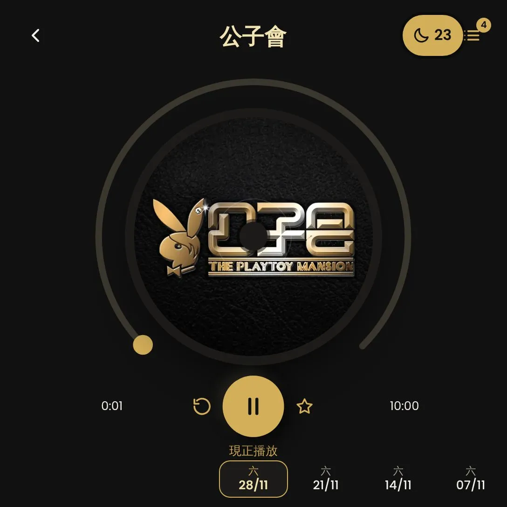
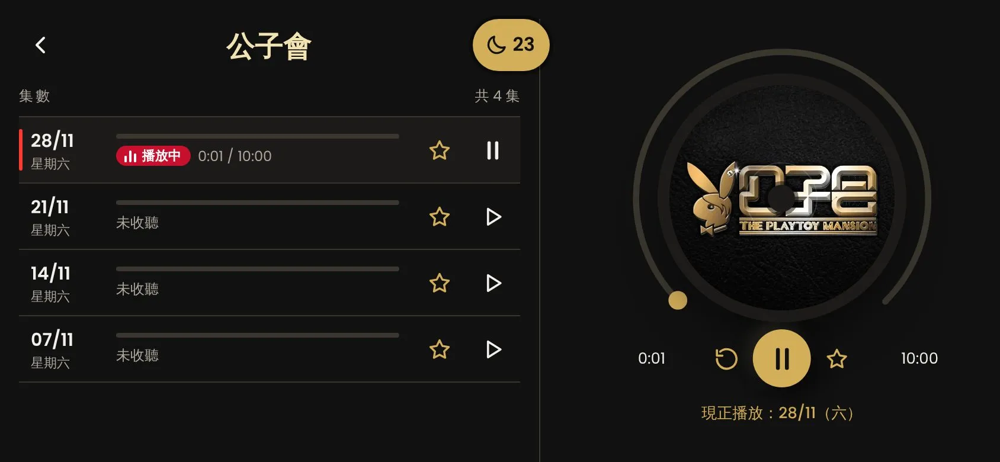
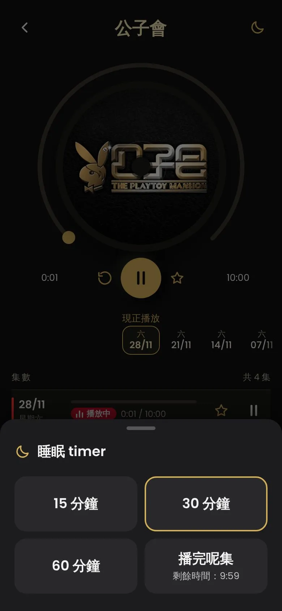
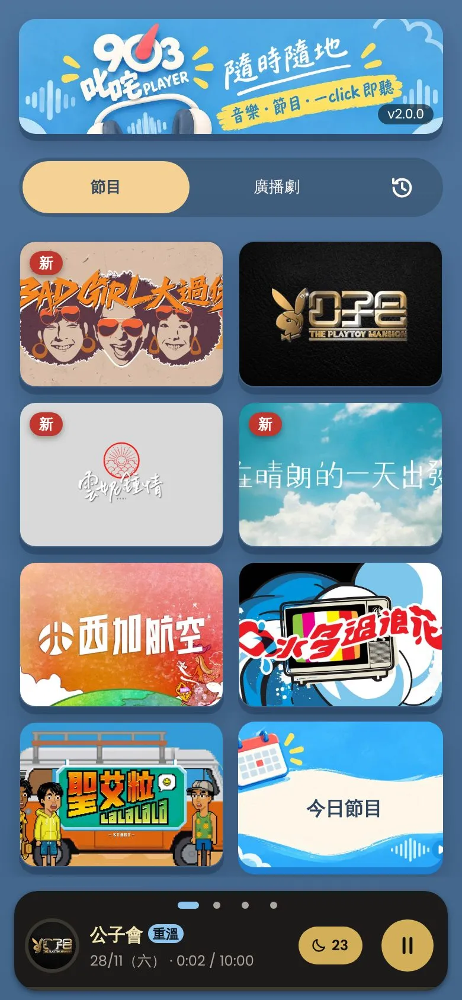

9d 睡眠 timer：入口位置 preview
真 app 截圖（v2.0.0）加上新掣。月亮掣冇開 = 細 icon；開咗 = 實色膠囊顯示剩餘分鐘（例：23）。 撳月亮開底部選單：15 / 30 / 60 分鐘、播完呢集；時間到用 10 秒淡出音量先暫停。
方案 A唱片圈左上角（ⓘ 嘅對面）
所有裝置同一個位：唱片圈頂嗰行左邊，同右邊 ⓘ（有資料嘅節目先有）對稱；控制列（由頭 / 播放 / 收藏）唔郁。





方案 B頁頭右上（返回掣對面）
內頁：頁頭右邊（HomeView 喺清單掣左邊）。主頁闊版播放卡冇頁頭，放喺卡頭下面嗰行左邊（同方案 A 差唔多）。 手機橫嘅頁頭喺左欄，掣會離唱片較遠。





底部選單（兩個方案共用）
未開：揀一項即開始。開咗：頂右顯示剩餘時間、剔住而家嗰項、多一粒「關閉 timer」；揀另一項 = 由而家重新計。 「播完呢集」只喺重溫 / 廣播劇有效，直播時變灰。平板 / 電腦闊版選單最闊 480px 置中。



Mini player（可選）
Mini player 唔加入口（位唔夠）；timer 開緊先喺播放掣左邊出細膠囊「🌙 23」，撳佢開同一個選單。冇開 timer 時 mini player 零改變。

要你決定
| # | 問題 | 建議 |
|---|---|---|
| 1 | 入口用方案 A 定 B？ | A：所有裝置同一位、貼近唱片同控制；B 喺手機橫離唱片遠 |
| 2 | Mini player 開緊 timer 時出唔出「🌙 23」？ | 出（冇開 timer 時零改變） |
| 3 | 時間到暫停之後，timer 自動消失定保留上次揀嘅時長做預設？ | 消失；下次再撳月亮重新揀 |
| 4 | 手動暫停 / 轉節目時 timer 點算？ | 照計（同 iOS 時鐘「停止播放」一樣）；轉去直播時「播完呢集」自動改成剩餘分鐘 |